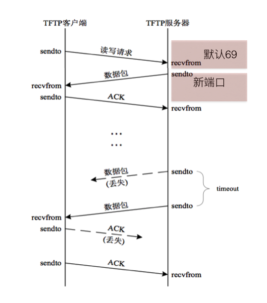
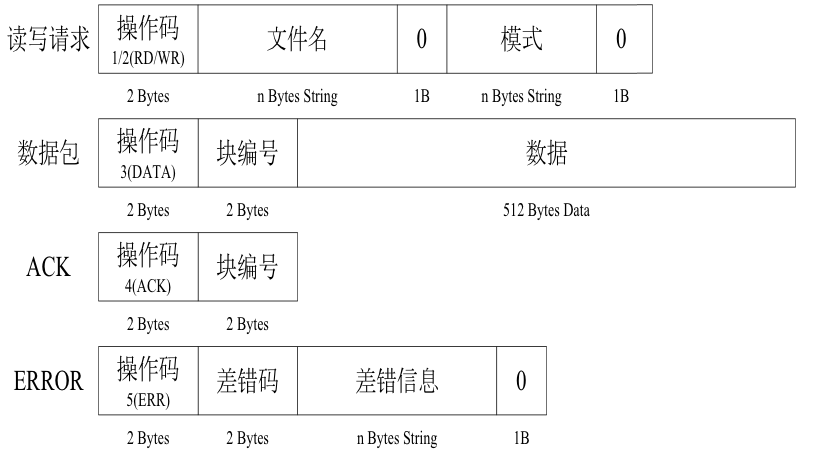

应用：TFTP客户端
1. TFTP协议介绍
TFTP（Trivial File Transfer Protocol,简单文件传输协议）
是TCP/IP协议族中的一个用来在客户端与服务器之间进行简单文件传输的协议
特点：
- 简单
- 占用资源小
- 适合传递小文件
- 适合在局域网进行传递
- 端口号为69
- 基于UDP实现
2. TFTP下载过程
TFTP服务器默认监听69号端口
当客户端发送“下载”请求（即读请求）时，需要向服务器的69端口发送
服务器若批准此请求,则使用一个新的、临时的 端口进行数据传输

当服务器找到需要现在的文件后，会立刻打开文件，把文件中的数据通过TFTP协议发送给客户端
如果文件的总大小较大（比如3M），那么服务器分多次发送，每次会从文件中读取512个字节的数据发送过来
因为发送的次数有可能会很多，所以为了让客户端对接收到的数据进行排序，所以在服务器发送那512个字节数据的时候，会多发2个字节的数据，用来存放序号，并且放在512个字节数据的前面，序号是从1开始的
因为需要从服务器上下载文件时，文件可能不存在，那么此时服务器就会发送一个错误的信息过来，为了区分服务发送的是文件内容还是错误的提示信息，所以又用了2个字节 来表示这个数据包的功能（称为操作码），并且在序号的前面
| 操作码 | 功能 |
|---|---|
| 1 | 读请求，即下载 |
| 2 | 写请求，即上传 |
| 3 | 表示数据包，即DATA |
| 4 | 确认码，即ACK |
| 5 | 错误 |
因为udp的数据包不安全，即发送方发送是否成功不能确定，所以TFTP协议中规定，为了让服务器知道客户端已经接收到了刚刚发送的那个数据包，所以当客户端接收到一个数据包的时候需要向服务器进行发送确认信息，即发送收到了，这样的包成为ACK(应答包)
为了标记数据已经发送完毕，所以规定，当客户端接收到的数据小于516（2字节操作码+2个字节的序号+512字节数据）时，就意味着服务器发送完毕了
TFTP数据包的格式如下:

2. 参考代码如下：
#coding=utf-8
from socket import *
import struct
import sys
if len(sys.argv) != 2:
print('-'*30)
print("tips:")
print("python xxxx.py 192.168.1.1")
print('-'*30)
exit()
else:
ip = sys.argv[1]
# 创建udp套接字
udpSocket = socket(AF_INET, SOCK_DGRAM)
#构造下载请求数据
cmd_buf = struct.pack("!H8sb5sb",1,"test.jpg",0,"octet",0)
#发送下载文件请求数据到指定服务器
sendAddr = (ip, 69)
udpSocket.sendto(cmd_buf, sendAddr)
p_num = 0
recvFile = ''
while True:
recvData,recvAddr = udpSocket.recvfrom(1024)
recvDataLen = len(recvData)
# print recvAddr # for test
# print len(recvData) # for test
cmdTuple = struct.unpack("!HH", recvData[:4])
# print cmdTuple # for test
cmd = cmdTuple[0]
currentPackNum = cmdTuple[1]
if cmd == 3: #是否为数据包
# 如果是第一次接收到数据，那么就创建文件
if currentPackNum == 1:
recvFile = open("test.jpg", "a")
# 包编号是否和上次相等
if p_num+1 == currentPackNum:
recvFile.write(recvData[4:]);
p_num +=1
print '(%d)次接收到的数据'%(p_num)
ackBuf = struct.pack("!HH",4,p_num)
udpSocket.sendto(ackBuf, recvAddr)
# 如果收到的数据小于516则认为出错
if recvDataLen<516:
recvFile.close()
print '已经成功下载！！！'
break
elif cmd == 5: #是否为错误应答
print "error num:%d"%currentPackNum
break
udpSocket.close()
运行现象：